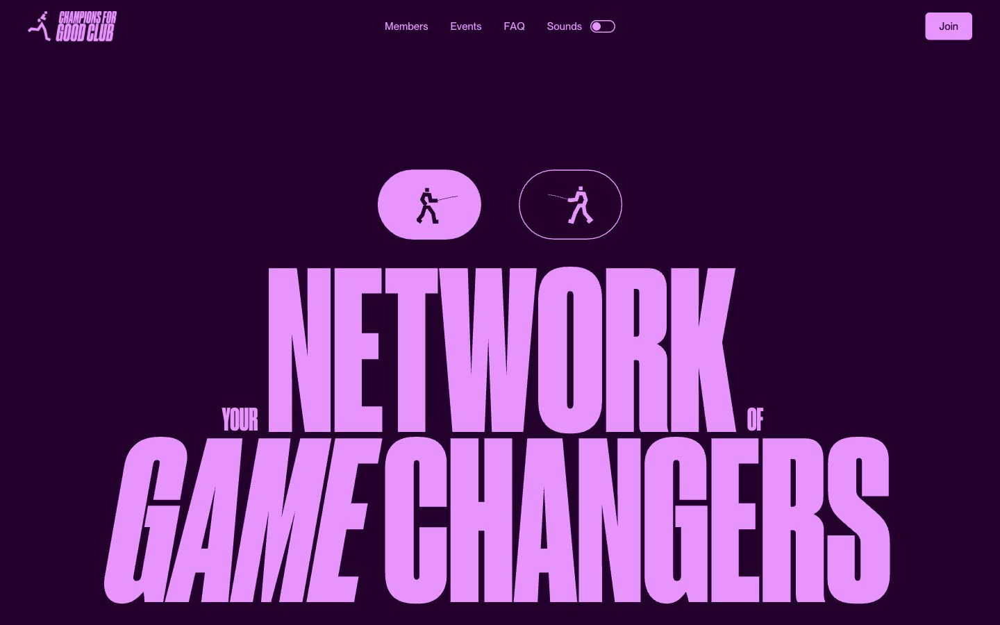
Champions4good
darkmidnight sports broadside — a vintage club poster screaming from a plum-dark wall
Druk Condensed Super Desktop · Neue Montreal · Arial
Сайт Николая · выбор стиля
Это реальные работающие сайты с Refero, а не мои концепты. Курсивом — формулировка направления самим сервисом. Клик по картинке открывает полную дизайн-систему: палитру, шрифты, приёмы вёрстки.
Отобраны по характеру, а не по теме: у Николая свой яркий образ, и ему нужна система с сильным голосом, а не нейтральная галерея. Назови номер — соберу сайт по этой системе целиком.

midnight sports broadside — a vintage club poster screaming from a plum-dark wall
Druk Condensed Super Desktop · Neue Montreal · Arial

Poster studio on matte black — bold instructor faces, chalk-white type, single neon pulse.
GT Walsheim Pro · Times
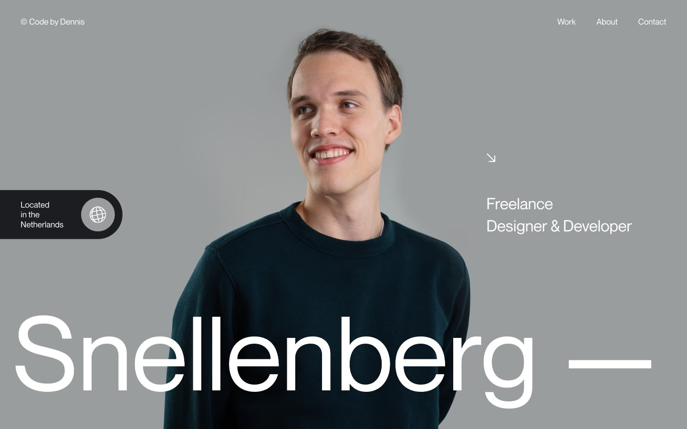
Dark editorial canvas with giant quiet headlines
Dennis Sans
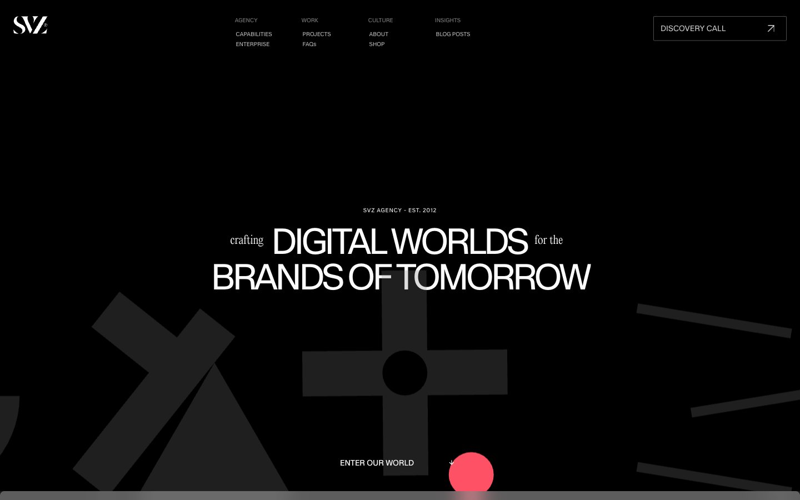
Black gallery wall, blood-red punctuation — Oversized white display type floats on a void-like dark canvas, interrupted by a single vivid red accent and dramatic ornamental display faces that feel like gallery signage rather than web UI.
Kmr Waldenburg · Editorialnew · Dirtyline 36 Daysoftype 2022
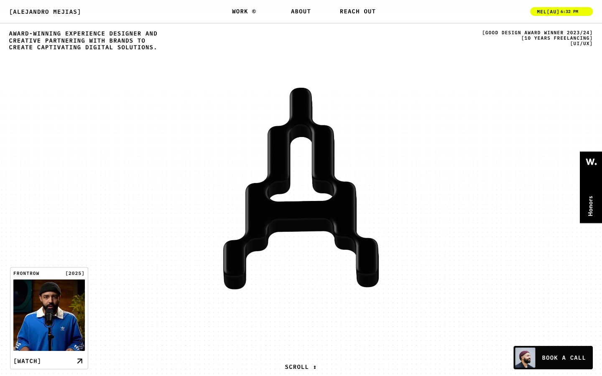
Acid-lit brutalist atelier, acid yellow against obsidian and bone white
FK Raster Grotesk Compact Trial Sharp · IBM Plex Mono · Be Vietnam Pro
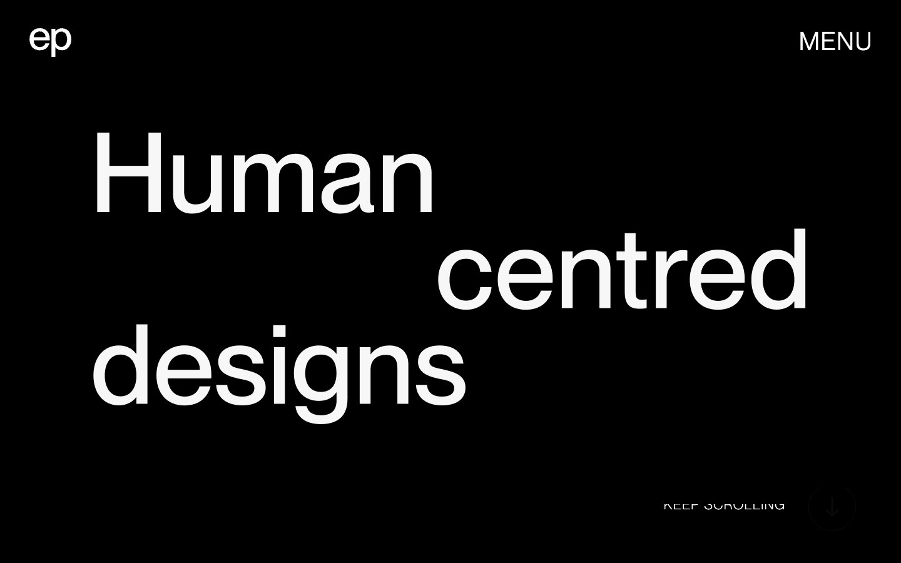
Editorial monolith of light and shadow — enormous type carved into a binary canvas, with project imagery crashing into the letters.
Neue Montreal · Neue Montreal Variable · Arial
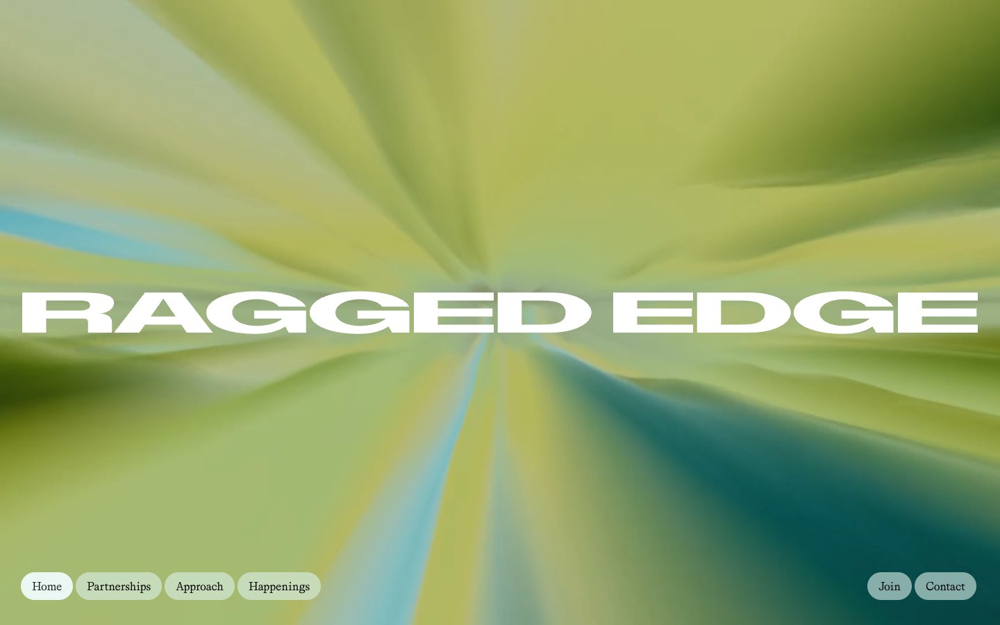
Editorial brutalism on white marble. Imagine Vogue's typographic confidence merged with a Berlin gallery's color restraint — all ink and air, with one burst of color used as exclamation, never decoration.
ABCDiatypeExpanded-Bold · Grit-Regular
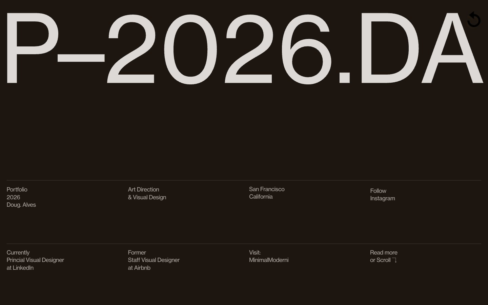
Oversized typographic monolith on warm charcoal
Inter · wtqc · System UI (-apple-system)
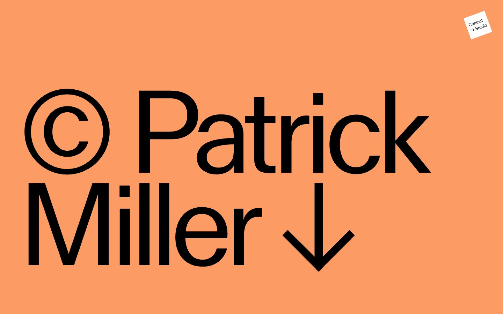
oversized masthead on chalky color fields — a portfolio that behaves like a printed poster
MlrStandard · -apple-system
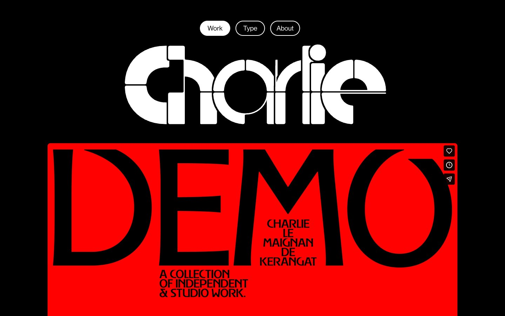
Monastery stone-cut typography on obsidian. A portfolio that uses one red wall to make silence deafening.
Brasparz Variable · NeueHaas · Trajan-style serif (editorial credits, not in extracted data but visible)
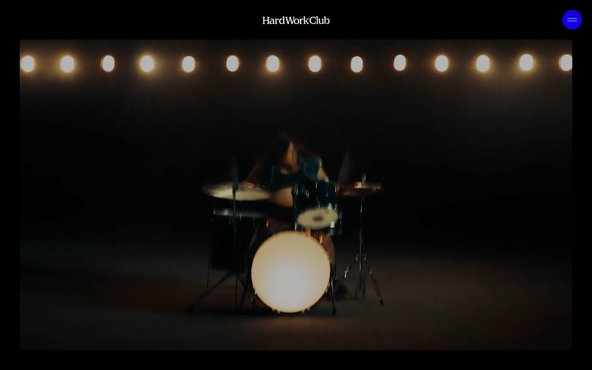
midnight black-box theater — a dark room where one round blue light glows above a stage, and the only thing louder than the silence is the film playing
Maligna · Founders Grotesk
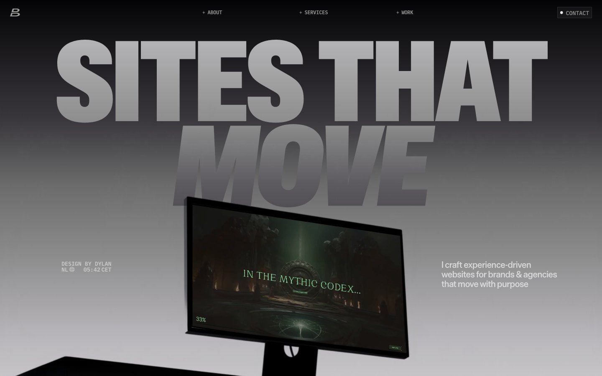
Brutalist type foundry at dusk
Die Grotesk B · ABC Gravity Variable · IBM Plex Mono